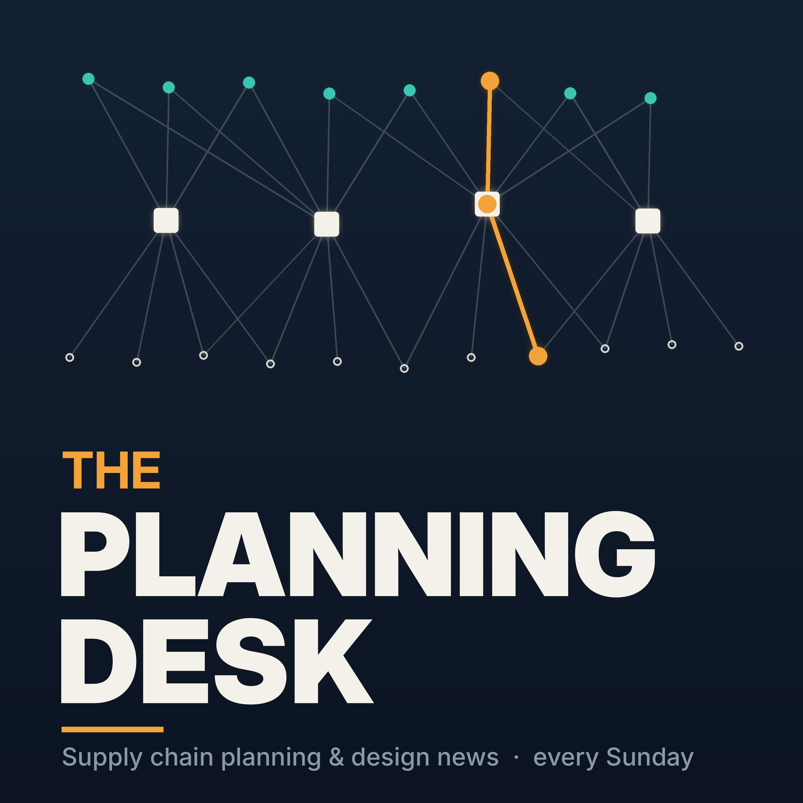

The Planning Desk
Fifteen minutes of supply chain planning and design news every Sunday, with a focus on the Nordics and the DACH region: disruptions, trade and macro signals, planning technology and AI, real company use cases and the events worth your time. Made in partnership with Optilon.
The Planning Desk is produced with AI. AI agents gather and summarise the week's news from public sources, and the hosts' voices are synthetic.
The first episode arrives on Sunday.